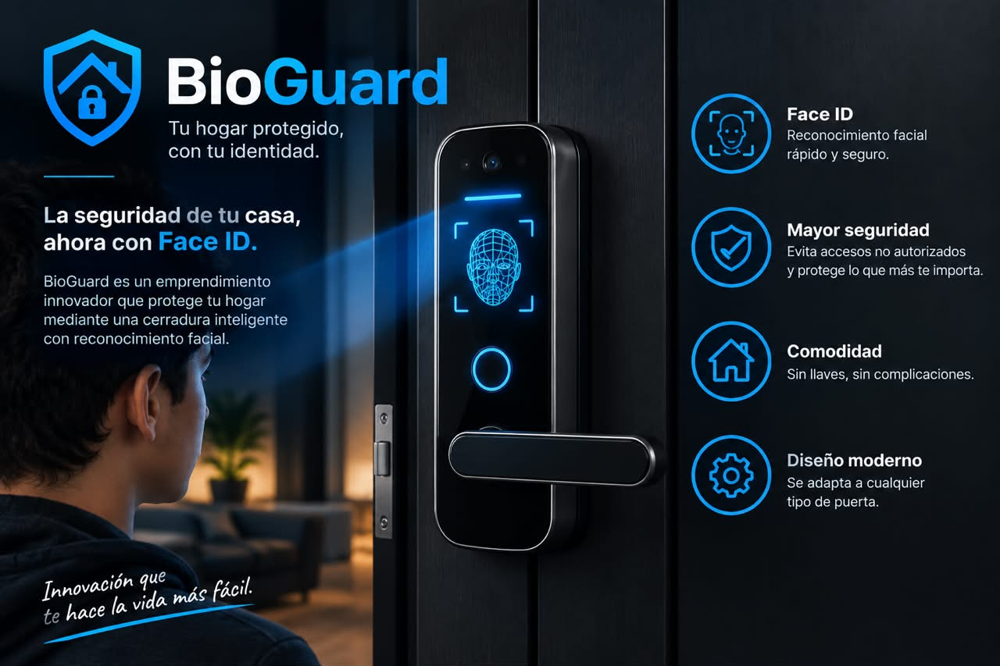

Contexto:
En el Perú, en 2025, el 8,8 % de las viviendas urbanas fueron afectadas por robos o intentos de robo; el 4,2 % sufrió robos consumados y el 5,1 % intentos de robo. Los departamentos con mayores porcentajes fueron Ucayali (24,1 %), Loreto (22,6 %) y Madre de Dios (17,5 %). Por región natural, la Selva registró 15,4 %, la Costa 8,1 % y la Sierra 7,7 %. Solo el 21,1 % de las viviendas afectadas por robos realizó una denuncia. Las principales razones para no denunciar fueron considerar que era una pérdida de tiempo (37,1 %), desconocer al delincuente (26,3 %) y desconfiar de la Policía (14,4 %). En los intentos de robo, los motivos principales fueron que el hecho no se consumó (31,0 %) y que denunciar era una pérdida de tiempo (29,8 %).
¿Quienes somos?:
BioGuard es una propuesta de seguridad para el hogar que utiliza tecnología de reconocimiento facial y contraseña digital para controlar el acceso a una vivienda. Su objetivo es ofrecer una alternativa moderna a las cerraduras tradicionales, facilitando la entrada de personas autorizadas y ayudando a mejorar el control de quién puede ingresar.
El problema que encontramos:
La seguridad de las viviendas es una preocupación para muchas familias de Lima. Los robos y los intentos de robo pueden generar pérdidas económicas y preocupación entre los habitantes. Las cerraduras tradicionales permiten abrir una puerta con una llave física, que puede perderse, olvidarse o quedar en manos equivocadas. Por eso, BioGuard propone explorar una solución tecnológica que permita verificar la identidad de la persona antes de autorizar el ingreso.
Innovación:
Comodidad: permite plantear el ingreso sin utilizar una llave tradicional. Control de acceso: busca limitar la entrada a personas autorizadas. Tecnología innovadora: utiliza reconocimiento facial como método de identificación. Uso sencillo: propone un proceso de ingreso fácil de entender. Modernización del hogar: incorpora una solución tecnológica a la seguridad doméstica. Potencial de personalización: podría adaptarse para reconocer a distintos integrantes de una familia.
Misión y Visión:
Misión:
Brindar una solución tecnológica innovadora para el control de acceso a los hogares mediante el reconocimiento facial, ofreciendo comodidad, facilidad de uso y mayor control de seguridad para las familias.
Visión:
Ser una de las opciones favoritas para la seguridad de las viviendas en Lima, brindando servicios confiables y de calidad que protejan a las familias y sus hogares, generando confianza y tranquilidad en nuestros clientes.
